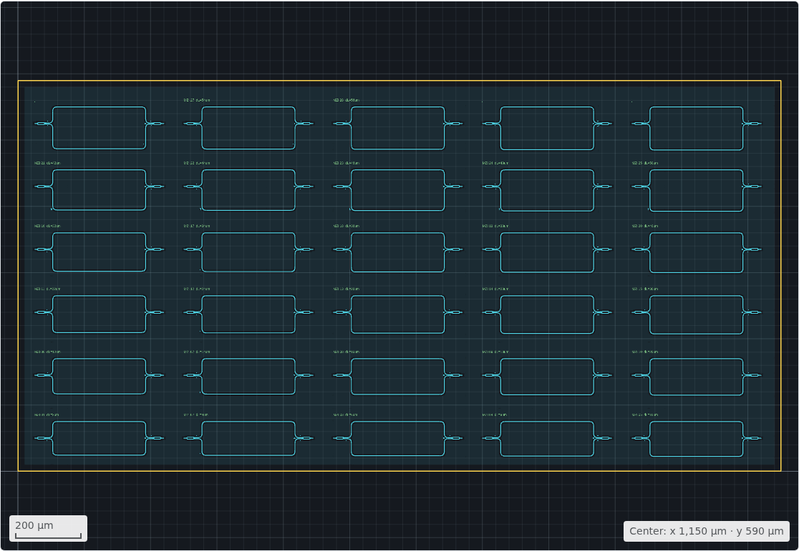
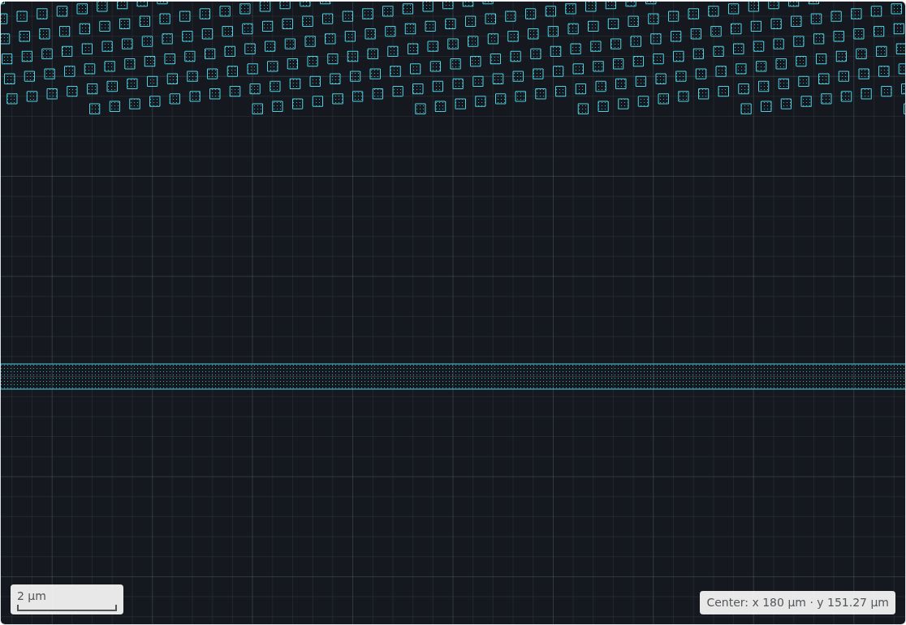

Generate a 30-MZI chip
The example builds a hierarchy of 30 Mach–Zehnder interferometers in a 5 × 6 array. It uses PCells for reusable geometry and writes a CSV with each device's position and path length difference. The MMI geometry is illustrative and requires foundry validation before fabrication.
Run from the repository root. Keep scratch in the current shell for the viewer command.
scratch="$(mktemp -d)"
export MASKYARD_DATABASE_URL="sqlite:///$scratch/chip.db"
uv run --locked python examples/chip_30_mzis.py --output "$scratch/chip.gds"
uv run --locked --extra web uvicorn maskyard.web:app
The script writes chip.gds and chip.csv to the scratch directory. Open http://127.0.0.1:8000/, select the saved cell from the chip factory, and use Fit layout to see the whole array.

How the script adds fill
The chip() factory builds the base hierarchy. Running the script calls main(), which uses top.fill() to add 200 nm square fill cells with a 5 µm clearance around the waveguides before exporting the GDS. The guard skips fill generation if the saved chip already contains it.
top = chip()
fill_cell = fill_wg()
if not any(instance.cell_id == fill_cell.id for instance in top.instances):
top.fill(
fill_cell,
fill_regions=[
(
kdb.Region(
kdb.Box(
nm(20),
nm(20),
nm(CHIP_WIDTH - 20),
nm(CHIP_HEIGHT - 20),
)
),
0,
)
],
exclude_layers=[(WG, nm(5))],
row_step=kdb.Vector(400, 50),
col_step=kdb.Vector(-50, 400),
tile_size=(nm(200), nm(200)),
)
top.write(args.output)
At whole-chip scale, the viewer shows dense fill as a shaded coverage preview. Zoom in beside a waveguide to see the individual squares and the clearance around it.
